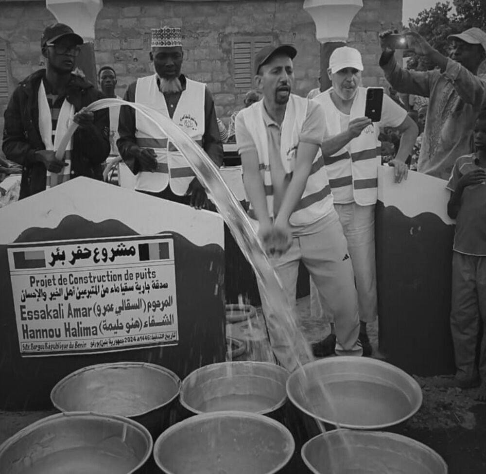

UrgentÉligible zakat
Maroc et Afrique subsaharienne
Colis alimentaires pour les familles
Des colis de base pour nourrir une famille pendant plusieurs semaines.
4 120 € sur 5 000 €82 %
Association humanitaire bruxelloise, nous apportons de l'eau potable, des repas, des écoles et des soins à celles et ceux qui en manquent, en Belgique et dans le monde.
Choisissez un projet et suivez la collecte en direct. Chaque projet terminé est montré en photos et en vidéo.
Des colis de base pour nourrir une famille pendant plusieurs semaines.

Repas chauds, vêtements et écoute dans les rues de Bruxelles.

Un puits donne de l'eau propre à tout un village, pour des années.
Chaque don est affecté à ce que vous avez choisi. La zakat ne va qu'aux bénéficiaires prévus par la religion.
L'aumône obligatoire de 2,5 % sur l'épargne qui a atteint le nisab pendant un an.
Calculer ma zakatÀ verser avant la prière de l'Aïd al-Fitr, pour chaque membre du foyer.
Payer la zakat al-fitrLe don volontaire, à tout moment, du montant que vous voulez.
Donner une sadaqaUn bienfait qui dure : un puits, une école, un dispensaire. Possible au nom d'un proche disparu.
Offrir une sadaqa jariyaUn don chaque mois pour qu'un enfant orphelin mange à sa faim, aille à l'école et soit soigné. Un engagement que vous pouvez arrêter à tout moment.
De votre clic jusqu'au terrain, voici ce qui se passe.
Par Bancontact, carte, Wero ou virement, en quelques secondes. Vous recevez un reçu par e-mail.
Votre don va au projet ou au type de don choisi : zakat, sadaqa ou fonds général.
Achats sur place, distribution et travaux, avec nos partenaires locaux.
Photos et vidéos publiées sur le site et nos réseaux. Les donateurs reçoivent des nouvelles du projet.
Nos campagnes, filmées par nos bénévoles.
Les dons mensuels nous permettent de planifier les distributions et de tenir nos promesses dans la durée. Vous pouvez modifier ou arrêter à tout moment, en un e-mail.
Devenir donateur mensuelDistribution de repas, maraudes à Bruxelles, soutien scolaire, préparation des colis, missions à l'étranger : chaque main tendue fait la différence.
Devenir bénévole